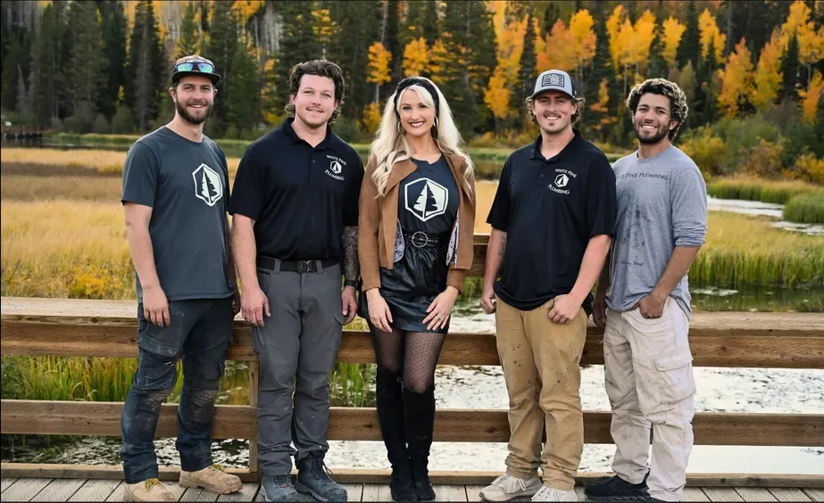
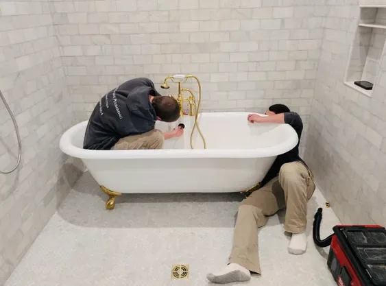
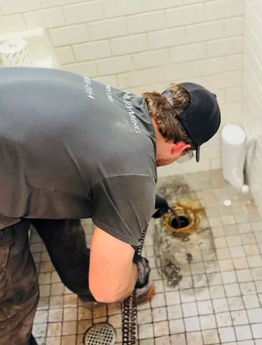

South Jordan · Rooted in Quality, Flowing in Trust
Your plumber in South Jordan, you can rely on.
White Pine Plumbing is a plumber in South Jordan. From drain cleaning to water heater installs, water softeners and leak repair, we deliver expert care for every client, with fast communication and honest pricing.
South Jordan · Jeremy Taylor, CC BY 2.0, via Wikimedia Commons

Meet the crew
Five people. One standard.
Our dedicated team brings experience, craftsmanship, and care to every project, led by co-owners and expert plumbers Jake Winward and Rett Speidel.
Plumbing services
From drains to water heaters.
Expert care for every client, for planned projects and emergencies alike.
Drain cleaning
Backed-up drains cleared and flowing again.
General plumbing
Everyday plumbing for your home, done right.
Water softeners
Water softeners for homes with hard water.
Water heaters
Water heater installs and urgent water heater issues.
Plumbing repairs
Repairs done with precision and care, including burst pipes.
Leak locating & repair
Find the leak, then fix it.


How we work
Five steps, no surprises.
Open each valve to follow a job from the first call to the follow-up.
Step 1 of 5
Contact us
Reach out to our friendly team by phone, text, or online form to get started. We’ll listen carefully to your concerns and schedule a convenient time to discuss your plumbing needs. Whether it’s an emergency or a planned project, we’re ready to help.
Step 2 of 5
Assessment
Our licensed plumber arrives to evaluate the issue in detail. We’ll diagnose the problem, explain what’s happening in clear terms, and answer your questions. No confusing jargon, just straightforward communication you can trust!
Step 3 of 5
Planning
Once we understand your situation, we’ll create a tailored solution proposal. This includes clear pricing, available options, and an estimated timeline. You’ll always know exactly what to expect before we begin.
Step 4 of 5
Implementation
Our expert team gets to work, completing the repair or installation with precision and care. We use quality materials, industry-best practices, and take every precaution to protect your home while we work.
Step 5 of 5
Follow-up
After the job is complete, we’ll walk you through the results, test everything, and make sure you’re fully satisfied. We’ll also share maintenance tips to help you avoid future issues.
Why choose us
There when you need us most.
At White Pine Plumbing, we know plumbing emergencies can happen at any time, that’s why our team responds quickly and reliably. Whether it’s a burst pipe, backed-up drain, or urgent water heater issue, you can count on us to be there when you need us most.
Our promise to you
When you hire White Pine Plumbing, you can expect fast communication, honest pricing, and expert solutions. We treat your home like our own, and we don’t consider the job done until you’re completely satisfied.
Reaching us is easy: phone, text or email, whichever works best for you. With White Pine Plumbing, you’ll have peace of mind knowing your home is protected by experts who are Rooted in Quality, Flowing in Trust.
Questions
Straight answers.
New on the blogHard water and your plumbing: what it does and how to check yoursWhat USGS says hard water does to pipes and water heaters, and how to find your own water’s numbers.
Read it01How do I reach White Pine Plumbing?
By phone, text or the online form, whichever works best for you. Call or text 435-357-5862.
02Do you handle plumbing emergencies?
Yes. We know plumbing emergencies can happen at any time, so our team responds quickly and reliably: burst pipes, backed-up drains or urgent water heater issues.
03Will I know the price before you start?
Yes. After the assessment we create a tailored proposal with clear pricing, available options and an estimated timeline, so you always know what to expect before we begin.
04When is the job done?
Not until you’re completely satisfied. We walk you through the results, test everything, and share maintenance tips.
Get a quote
Rooted in quality, flowing in trust.
Call or text 435-357-5862, or send the quote form. Fast communication, honest pricing and expert solutions in South Jordan and the southwest valley.
Get a quote